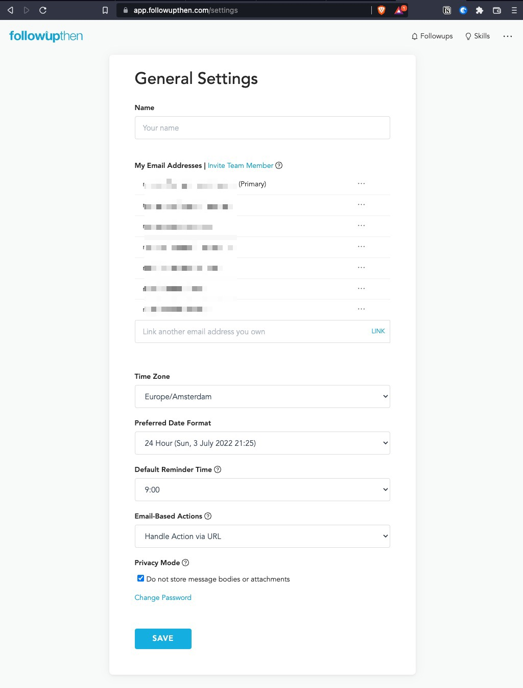
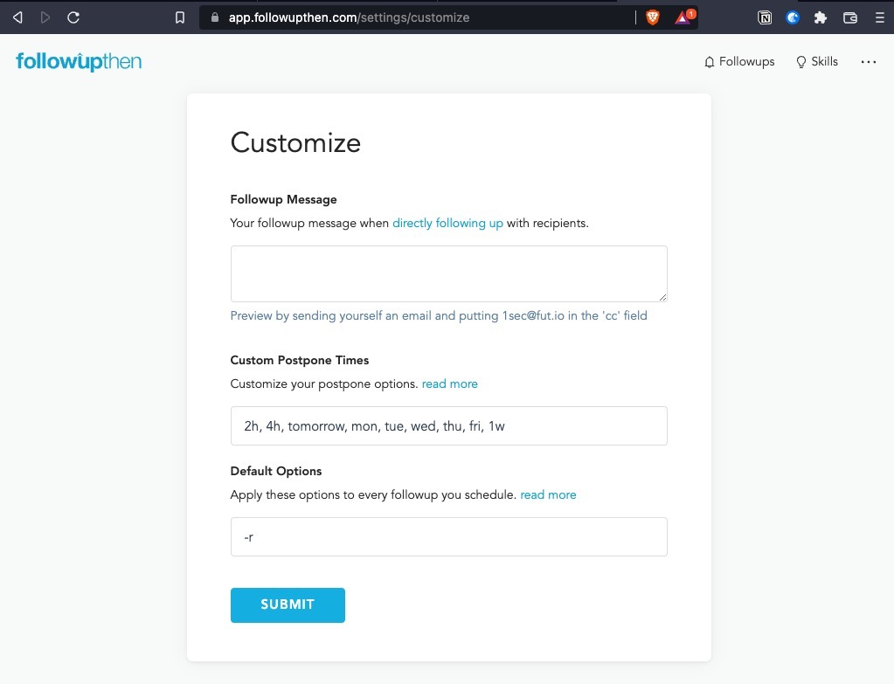
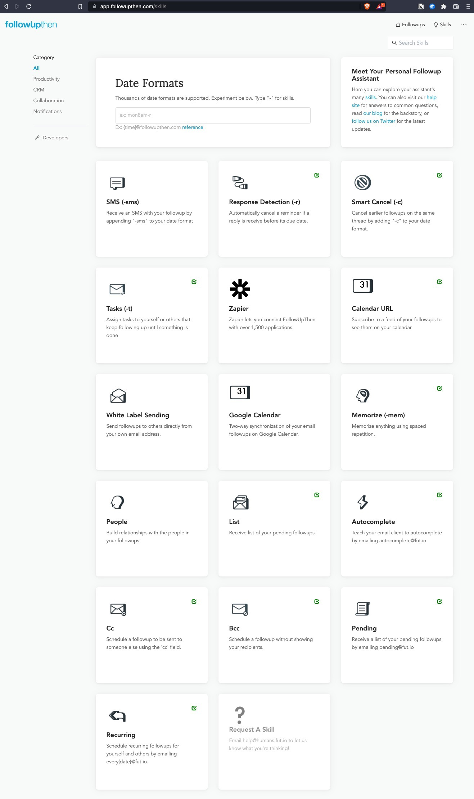

Are you struggling to consistently follow-up on (your) emails?
Since 2015, I have been using FollowUpThen(https://www.followupthen.com/) and could not work without it anymore.
It’s the simplest way to schedule a follow-up, and works no matter how/where you send emails:
Simply insert in the Bcc: field when you reply things like:
- tomorrow@fut.io
- mon@fut.io
- 10apr@fut.io
- 3pm@fut.io
Or forward an email you need to action later, with the same logic as above in the To: field.
And you get a reminder in your inbox on the specific day/time you included before @fut.io
Multiple emails
With a single account, you can make it work across all your emails:

Customisation options

Skills

Tips
When in "prospecting mode", ie sending a lot of cold emails in a row, I add the @fut.io email (eg 1week@fut.io or 1w@fut.io for short) in my email client's Preferences (I'm using Spark, but any email client will do) to be inserted in the Bcc field for any new email.
Highly recommend.
$5/month well spent.